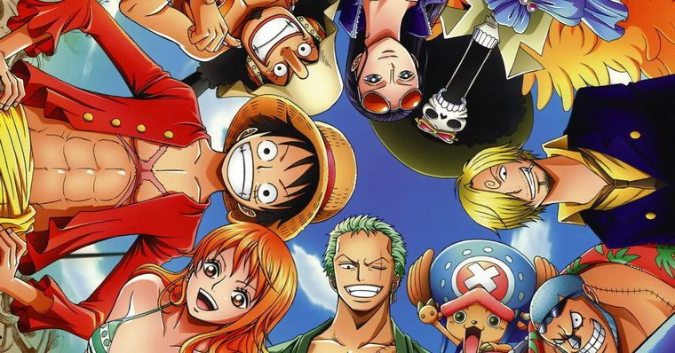

Notícias
Próximos arcos de One Piece chegam à Netflix em 2021
Pouco mais de uma semana depois de disponibilizar os
primeiros 61 episódios do anime, a Netflix anunciou que os próximos arcos de One Piece
chegam em 2021 à plataforma.
Mangá de One Piece é adiado devido a doença repentina do autor
O twitter oficial de One Piece informou que o autor do mangá,
Eiichiro Oda, não pode publicar um capítulo da obra essa semana por conta de uma súbita
doença que o atingiu. De acordo com o twitter, o autor já está bem, e deve retomar o
trabalho na semana que vem.
Autor de Dr Stone vai desenhar mangá spin-off de One Piece
Foi anunciado que o autor de Dr Stone, Boichi, irá ser o
responsável pela adaptação em mangá da light novel One Piece A. A nova obra deve chegar no
verão/julho desse ano pela One Piece Magazine.
últimos episódios
Episódio 948 -
Começa o Contra-Ataque! Luffy e os Samurais das Bainhas Vermelhas!
Começa o Contra-Ataque! Luffy e os Samurais das Bainhas Vermelhas!
Entra em ação Kawamatsu, o maior Yokozuna de Wano! Os integrantes dos Nove Bainhas e o Chefe Hyogoro revelam suas identidades e juntam forças com Luffy! Os prisioneiros ficam comovidos diante de seus poderosos aliados!
Episódio 947 - Munição Mortal! Os Cartuchos-Praga Miram Luffy!
A munição mortal forjada por Queen, os Cartuchos-Praga, acabam com as esperanças do campo de escavação! Ser atingido significa a morte! A aterrorizante arma desencoraja os prisioneiros e Luffy se torna o alvo! Ele está em apuros e sozinho! Será o seu fim?!
Episódio 946 - Detenham a Imperatriz do Mar! O Plano Secreto de Queen!
Uma Big Mom enfurecida atropela tudo que vê pela frente! Ela trava um colérico combate contra Luffy, que está encurralado! O campo de escavação está à beira da ruína, e Queen planeja uma estratégia para capturar a Imperatriz! O que será de Luffy?! Como se encerrará a operação mortal?